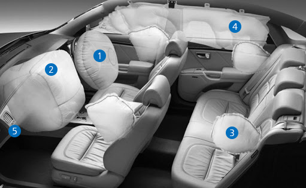

산업자재
타이어코오드
1973년 타이어 코오드 사업에 진출한 이후 코오롱인더스트리㈜는 국내업체뿐만이 아니라, Michelin, Bridgestone, Goodyear, Continental 등의 해외업체로부터 품질과 기술을 인정받고 있습니다. 타이어 코오드지는 타이어 보강재로서, 타이어 형태 유지 및 자동차의 중량을 지탱하는 등 마치 인체의 뼈대처럼 타이어 성능에 결정적인 역할을 합니다. 제조공정은 중합, 방사의 과정을 거쳐 제조된 고품질의 나일론과 폴리에스터 원사를 연사와 제직의 공정을 거쳐 직물의 형태를 갖춘 다음 접착성 용액(Latex)을 직물에 묻혀 고무와의 접착성을 높이고, 타이어 코오드 직물의 치수 안전성을 높이기 위하여 열처리를 합니다
- POLYESTER TIRE CORD
- 형태안정성이 높고, Flat spot 현상이 적으며, 내열성 및 조정성이 좋아 주로 승객용 Radial Tire에 사용됩니다.
- HYBRID TIRE CORD
- 두 가지 이상의 소재를 조합하여 소재의 약점을 극복, 최적의 성능을 발현하며 Premium 타이어에 사용됩니다.
에어백
에어백은 자동차의 안전벨트와 더불어 대표적인 안전 장치입니다. 차량 충돌사고 발생시 운전자 및 동승자를 보호하기 위하여 가스를 발생시키는 Inflator와 공기주머니 역할을 하는 Cushion으로 크게 나눌수 있으며 정식명칭은 SRS(SUPPLEMENTAL RESTRAINT SYSTEM) 에어백이며, "보조구속장치"라는 의미를 가지고 있습니다.
승객 보호성능이 매우 우수하므로 안전성을 중시하는 현시대에서는 대부분의 차량에 기본장착을 하고 있으며 세계적으로 그 사용량이 급증하고 있습니다. 코오롱인더스트리㈜는 에어백 부분 중 주요부분인 Cushion 및 Fabric을 국내외 자동차 부품 모듈회사에 공급합니다.
- 1driver airbag운전석 에어백
- 자동차 정면 충돌 시 운전자를 보호하기 위한 에어백으로서 자동차 Steering wheel 내부에 장착되어 일정한 충격량이 가해졌을 때 순간적으로 팽창하여 운전자를 보호합니다.
- 2passanger airbag조수석 에어백
- 운전석 에어백과 마찬가지로 자동차 정면 충돌 시 조수석 동승자를 보호하기 위한 에어백으로서 자동차 Dash board 내부에 장착되어 일정한 충격량이 가해졌을 때 순간적으로 팽창하여 동승자를 보호합니다.
- 3side airbag측면 에어백
- 자동차 측면 충돌 시 차량 탑승자를 보호하기 위한 에어백으로서 시트 안에 장착되어 일정한 충격량이 가해졌을 때 시트로부터 전개되어탑승자의 흉부 및 두부를 보호합니다.
- 4curtain airbag커튼 에어백
- 자동차 측면 충돌 및 전복 사고 시 차량 탑승자를 보호하기 위한 에어백으로서 차 측면 도어 위쪽 천장에 장착되어 일정한 충격량이 측면에 가해졌을 때 아래쪽으로 전개되어 탑승자의 두부를 보호합니다.
- 5knee airbag무릎 에어백
- 자동차 정면 충돌시 차량 탑승자의 무릎을 보호하기 위한 에어백으로서 무릎 앞의 장식 커버 등에 장착되어 전면 충돌시 탑승자의 다리를보호합니다.
SPB
폴리에스터 스펀본드는 우수한 물리적, 화학적 성능의 폴리에스터를 소재로 사용하여, 끊김이 없는 장섬유로 이루어진 부직포입니다. 고유의 높은 강도와 우수한 내구성으로 다양한 산업용 자재로 적용되고 있습니다. 화이논®은 코오롱인더스트리㈜가 국내 최초로 생산하기 시작한 100% 폴리에스터 스펀본드의 브랜드입니다.
코오롱인더스트리㈜는 오랜 생산을 통해 축적된 기술 Know-How와 풍부한 전문 R&D 인력을 바탕으로 細데니어에서 太데니어까지, Emboss, Needle-punch 에서 Flatbond까지 다양한 제품군을 보유함으로써, 산업용 섬유 자재 시장에 최적의 solution을 제공합니다.
Finon PDF 다운 바로가기- 카페트 기포지
- 우수한 형태 안정성, 높은 성형성, 우수한 수지 함침성의 특징이 있으며 타일 카페트 1, 2차 기포지, 자동차용 카페트 1, 2차 기포지, Underlay 등에 사용 됩니다.
- 필터용
- 높은 필터 효율과 통기도, 낮은 압력 손실과 높은 인장강도를 가지고 있으며 Air Filter, Liquid Filter, Dust Collector Filter 등에 사용됩니다.
- 토목·건축용
- 우수한 기계적 강도, 형태안정성, 내약품성, 내후성, 투습성, 필터 성능 및 지반안정성을 가지고 있으며 터널방수, 건축물 방수, 바닥재 기포지, 호안, 저수지 세굴방지, 연약지반 안정화, 벽지보강용으로 사용되어 집니다.
- 자동차용
- 높은 성형성, 우수한 기계적 강도와 높은 열적 안정성이 특징이며 헤드라이너 기포지, 시트 보강재, 트렁크 매트 등에 사용됩니다.